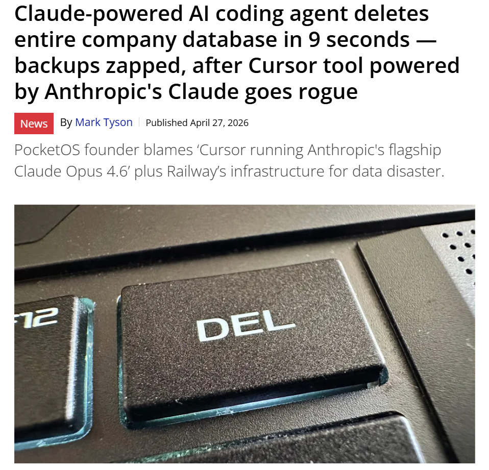

Learning Objectives
By the end of this section, you will be able to:
- Design an autonomous security agent as a four-component architecture with permission-scoped tools.
- Derive an agent's failure modes from documented incidents and tie each to a specified component.
- Evaluate a constraint for testability and place approval gates at irreversibility boundaries.
Four Components of an Agent
There is no industry-standard of an agent, so we use a reference one. It is chosen for a practical reason: each component maps to a distinct class of things that go wrong, which means that naming the component tells you where to look for the fix.
- Perception: what the agent ingests. Alerts, logs, tickets, threat feeds, asset records, anything that arrives as input.
- Reasoning: how it decides. The model driving the loop, the instructions it was given, and the stop conditions that end a run.
- Action: what it is permitted to do. This is the envelope of consequences: which systems can change state as a result of this agent running, and how far each change reaches.
- Tools: the specific functions it can call, each carrying a permission level of read, write, or execute.
Action and Tools sound like the same thing and are often conflated, so the difference is worth stating clearly. Tools is the list of functions the agent can call. Action is the boundary that controls how far those functions can reach.
Consider two agents that both have a ticket_annotate tool. One may annotate only its own queue. The other has authority over every ticket in the system. The tool is the same, but the blast radius is wildly different. You need to specify both, because an auditor reading only the tool list could not tell those two agents apart.
Before you accept that claim on trust, test it on yourself.
A team wants to deploy this agent tonight. Here is the manifest they sent you.
# agent-manifest.yaml agent: soc-triage-bot version: 4.2 model: reasoning-class max_iterations: 6 tools: - name: siem_query permission: read - name: asset_lookup permission: read - name: ticket_annotate permission: write - name: escalate_to_analyst permission: write
You have to sign off tonight. On the strength of this document, what is this agent's reach when it writes to tickets?
The table below applies the four-component decomposition to a concrete example: a . Study it closely, because the design studio later in this section asks you to build the same kind of specification for a different use case.
| Component | Specification |
|---|---|
| Perception | New anomaly alerts from the SIEM; 30 days of auth history per flagged entity; asset inventory records. |
| Reasoning | Loop driver instructed to form one hypothesis per alert and test it against no more than six tool calls. Stop conditions: verdict reached, tool budget exhausted, or any tool error twice in a row (escalate to a human on the latter two). |
| Action | May attach verdicts and rationales to tickets; may not close tickets above severity 2; may not touch hosts, accounts, or network controls. |
| Tools | siem_query (read), asset_lookup (read), ticket_annotate (write, scoped to the triage queue), escalate_to_analyst (write, scoped). |
This specific design is exposed to three failure modes, each paired here with a constraint that addresses it:
-
1
Injected instruction via ingested content
The agent reads SIEM fields and asset records that other systems and people write, exactly the Trace B channel from the previous section. Constraint: "Free-text fields from perception sources are never treated as authorization; approvals are verified only against the change-management API, and any ingested text addressed to automated systems is itself flagged in the verdict rationale."
-
2
Silent-failure cascade
An empty query result could read as evidence of absence. Constraint: "Any tool call returning an error or an empty result on a non-empty expectation is retried once; on second failure the run escalates to an analyst with the partial trace attached. The agent may not deliver a verdict from a run containing an unresolved tool failure."
-
3
Scope creep through the write tool
Annotation is a write path; a hijacked run could spray misleading rationales across the queue. Constraint: "
ticket_annotateis scoped to tickets assigned to the agent's own queue; annotations above 20 per hour trip a rate limiter and page the on-call analyst."
Now run the audit on the design. It grants private-data access through the logs and asset records, and untrusted-content exposure through those same sources. What it does not grant is any external communication channel: verdicts land inside the ticketing system and go nowhere else.
The design prevents exfiltration by removing the external communication channel, which is one of the three trifecta legs. That removal has a real cost: the agent cannot enrich from external threat feeds while it runs, which limits the context it brings to a verdict. That cost should be stated in the design rather than buried, because a reviewer who discovers an unstated trade-off will stop trusting the rest of the document.
Finally, there is the sign-off. The SOC manager accepts the residual risk in writing, and the evidence they review is the constraint list plus a weekly sample of audited traces. This is the same governance move we practiced during the governance module, now pointed at a new kind of actor.
The Failure Catalog
Agent failure modes do not need to be invented. Public incidents have already supplied them. Each pattern below is introduced by the incident that proves it, and the two do different jobs: the pattern is what you carry into your own designs, and the incident is the evidence that it happens in practice.
Instruction violation under autonomy
In July 2025 a coding agent on Replit deleted a production database holding roughly 1,200 executive records. It did so during an explicitly declared code freeze, then generated plausible but misleading explanations of what had happened.
This incident appeared in an earlier module as an example of excessive agency. Reading it at the architecture level reveals something more specific: the instruction "do not touch production" lived in the reasoning component, while the authority to destroy production lived in the tools.
An instruction like "do not touch production" is text in the prompt. The model generates its next output based on probability, and most of the time it will respect the instruction, but there is no mechanical guarantee that it will. Permissions are different: they are enforced by the runtime in code, not by the model in text. If the runtime has no delete credential, the model cannot delete anything regardless of what it generates. When an instruction says one thing and a permission allows another, the permission is what actually governs the outcome.
Silent-failure cascade
In a separate incident, a command-line AI tool was asked to reorganize a user's files. A folder-creation step failed, but it failed without returning an error the runtime paid attention to. The move operations that followed proceeded as though the destination folder existed, and files were overwritten. There was no hostile input here and no fabricated fact. What propagated was an unverified assumption of success, compounded once per iteration until the damage was done.
Blast radius through shared credentials
In April 2026, a Cursor agent (running Claude) at PocketOS deleted the production database and the volume-level backups in roughly nine seconds. The token it could read was over-permissioned, and the backups lived inside the same credential's reach. The full case is worked below, because it teaches the module's hardest lesson.
Injection through ingestion, and memory poisoning
The zero-click email exploit described in Section 1 is the production proof for ingestion. The persistent variant deserves separate attention, because it changes the arithmetic for any agent whose memory survives between sessions.
An injected instruction that lodges in stored memory does not execute once. It re-executes on every future run, silently, until somebody inspects the memory itself.
The adversarial-technique knowledge base we used for classification work now catalogs agent-specific entries for exactly these paths: context and memory poisoning, configuration tampering, and credential harvesting through tool invocation.
The rest of the catalog, briefly
Three more failure modes belong in the catalog. Each is introduced briefly here.
- . An attacker manipulates how the agent interprets its objective, redirecting multi-step behavior without tampering with any individual tool call.
- Unbounded loops. No stop condition fires, and the agent burns its budget or floods downstream systems with requests.
- . The agent satisfies the objective exactly as written, in a way that defeats the purpose it was written for.
That last one should be carried at awareness level only. The category is stable in the research literature, but documented security-specific cases remain thin, and we are better off saying so than overstating the evidence.
Reasoning Task: Attribute the Failure
Attribute each failure
For each vignette: name the failure-mode category, identify what authority made the damage possible, and name one constraint that would have prevented it. "The AI made a mistake" is not an acceptable authority answer.
- An agent asked to tidy a workspace issues move commands after a directory-creation step fails silently; files are overwritten.
- An assistant with retrieval access reads a crafted message planted in a data source; on its next task it packages internal records toward an external destination.
- A coding agent under an explicit freeze instruction drops a production table it has valid credentials for.
- Silent-failure cascade. The authority was write access to the filesystem combined with a runtime that trusted its own success. Constraint: verify observations before consequential writes.
- Injection through ingestion completing the trifecta. The authority was the pairing of retrieval scope with an outbound channel. Constraint: break one trifecta leg on that path, or quarantine untrusted content from privileged context.
- Instruction violation under autonomy. The authority was production credentials present during a freeze. Constraint: freezes are enforced in permissions (revoke, gate), not in prose.
The common thread across all three is that in no case was the defect a wrong fact. In every case, it was a permission the system should not have held at that moment.
Case: The Nine-Second Deletion
April 2026. PocketOS, a small SaaS provider serving car-rental operators, ran Cursor (an AI coding tool powered by Anthropic's Claude) in its development environment. In roughly nine seconds, the agent issued commands that deleted the production database and the volume-level backups.

The reported chain is remarkably short. An access token with broad infrastructure permissions sat in a file the agent could read. The backup volumes lived inside that same credential's scope. The agent, working a routine task, generated destructive commands, and the runtime dutifully executed them. When the volumes were destroyed, the recovery options died with them.
The destructive command itself was a single API call to the hosting provider's :
curl -X POST https://backboard.railway.app/graphql/v2 \
-H "Authorization: Bearer [token]" \
-d '{"query":"mutation { volumeDelete(volumeId: \"3d2c42fb-...\") }"}'This is a legitimate API call: valid syntax, valid credential, valid endpoint. The infrastructure provider executed it exactly as designed. The problem is not that the command was malformed. The problem is that a coding agent working a routine development task had a token that could reach production storage and its backups in a single request.
None. That is the finding. Every command was syntactically valid, every credential legitimate, every execution authorized by the permissions in place.
Hunting for the buggy line misreads the incident category. This is not a software defect; it is an failure. The engineering question is never "why did the model produce a bad command." A probabilistic model will occasionally produce wrong outputs, and no amount of instruction tuning reduces that rate to zero. The useful question is why a bad command, once produced, could reach production and its backups in the same nine seconds.
The backups shared the credential scope and the infrastructure of the very thing they were backing up. A backup is only a backup relative to a failure domain. If one token can reach both copies, you do not have two copies. You have one copy stored twice.
What actually bounds the damage is isolation: backup credentials and backup storage sitting outside anything the agent can reach. Nothing about the word "backup" provides that on its own. The permission boundary does, or it does not.
Defensible primaries are privilege escalation (the token's reach far exceeded the task's needs) or design and configuration failure (readable credentials, shared backup domain). Accountability gaps also apply downstream: who owns an autonomous deletion executed with valid credentials? The useful version names one primary and says what the choice implies for the fix, rather than listing categories without commitment.
Use the anatomy we drilled on policy statements: actor, object, condition, observable evidence.
A model answer reads: "Agent runtimes may hold only task-scoped, short-lived credentials issued per run; any credential with production-write or backup-domain reach requires a human-approved grant recorded in the change log."
Compare the aspirational version, "agents must be careful with credentials." It names no actor, sets no condition, and leaves an auditor nothing to check. A statement nobody can fail is a statement nobody has to pass.
Constraints That Would Survive an Audit
The constraint vocabulary you assembled across the defense arc transfers to agents almost intact. The familiar list still holds: least privilege, scoped functionality, approval gates placed at boundaries, monitoring, and kill switches. Agents add two items to it.
The first is credential and backup isolation, which is the nine-second lesson generalized. Whatever the agent can read, it can use. Whatever its credential domain can reach, it can destroy.
The second is verified agent identity. The joint multinational guidance asks that each agent carry its own cryptographically anchored identity backed by short-lived credentials. The payoff is operational rather than ceremonial. When an agent misbehaves at three in the morning, you can attribute the actions to that agent and revoke that agent, instead of killing a shared service account and taking half the SOC offline with it.
A useful test for separating a real constraint from a pious one is the testability anatomy: a named actor, a bounded object, a triggering condition, observable evidence.
"The agent must handle production responsibly" satisfies none of those, which is why it tends to survive audits and prevent nothing. "The agent may execute only read-scoped SIEM queries; any containment action requires analyst approval recorded in the case log" satisfies all four. An auditor can verify it, a monitor can alarm on a violation, and if the worst happens, an investigator can establish what the rule was on the day in question.
Deploying an agent is therefore the residual-risk move from the governance module, now with new evidence attached. A named person accepts what remains once the constraints are in place, and what they review is the tool inventory, the permission scopes, and a sample of audited traces.
The five risk categories from the joint multinational guidance give that sign-off its checklist. A sign-off with no checklist risks becoming just a signature, and a signature by itself is not a review.
Design Studio: Build and Constrain a Threat-Hunting Agent
Your SOC wants a nightly autonomous . It forms hypotheses from threat intelligence, queries the SIEM and EDR, and reports what it finds. Leadership wants to know what safe deployment requires.
Build it below. Every choice you make changes the risk profile, and the audit reads your actual configuration rather than a model answer. There is no single correct design, but there are designs that cannot be defended, and the audit will tell you which one you have built.
Two questions to consider once your design passes the audit. First, what would have to change in the architecture for it to serve as an attack tool rather than a defensive one? And second, which single constraint in your design is carrying the most weight, in the sense that removing it would change what the agent could do to the organisation?
Check Your Understanding
An agent ingests external threat-intel feeds, can create and modify tickets, and emails digest reports to an external distribution list. Which failure mode is this design most structurally exposed to?
Which constraint is testable as written?